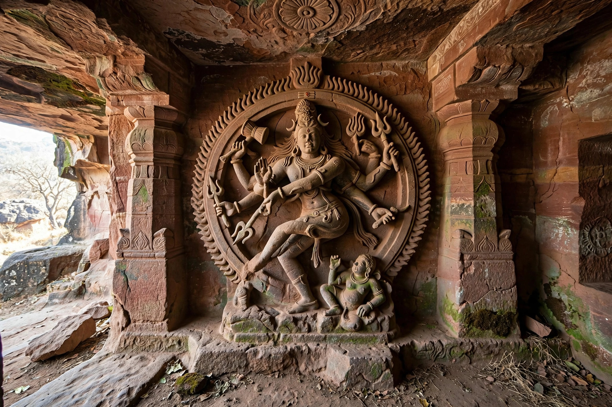

| Pulakeshin II | |
|---|---|
| Reign | c. 610–642 CE |
| Dynasty | Chalukya (Badami) |
| Capital | Badami (Vatapi) |

Pulakeshin II (c. 610–642) was the most famous ruler of the Chalukya dynasty of Badami in the Deccan, transforming a regional kingdom into an empire spanning much of peninsular India between the Narmada and Kaveri regions.
After securing the throne against his uncle Mangalesha, Pulakeshin subdued the Kadambas, Gangas, Mauryas of Konkan, Latas, Malavas and Gurjaras. His most celebrated victory, described in the Aihole inscription of his court poet Ravikirti, was over Harsha of Kannauj on the banks of the Narmada around 618–619, checking Harsha's southern expansion. He defeated the Eastern Chalukya region of Vengi and installed his brother Vishnuvardhana there, and campaigned against the Pallavas of Kanchipuram.
Pulakeshin exchanged embassies with Khosrow II of Persia — a scene sometimes identified in Ajanta paintings. The Chinese pilgrim Xuanzang visited his kingdom and praised his rule.
The Pallava king Narasimhavarman I avenged earlier defeats, invading the Chalukya kingdom and capturing Badami in 642; Pulakeshin is presumed to have died in the conflict.